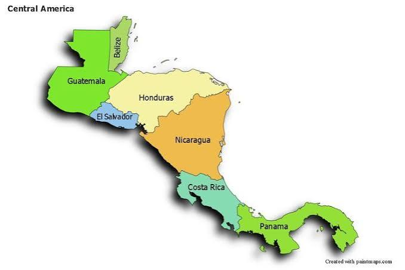

Explora los países
Toca un país para ver su historia y escuchar su himno

↓ Sigue bajando para ver la conclusión
Conclusión
La independencia de Centroamérica se proclamó en 1821 de forma pacífica, casi sin guerra, y fue conducida sobre todo por las élites criollas. Por eso cambió quién gobernaba, pero no transformó de inmediato la vida de indígenas, campesinos y otros sectores.
Poco después llegó la incertidumbre: la anexión al Imperio Mexicano (1822-1823), las Provincias Unidas del Centro de América (1823) y la República Federal (1824). Los conflictos entre liberales y conservadores y las rivalidades entre ciudades debilitaron la unión, y hacia 1838-1841 la federación se disolvió en cinco repúblicas.
Belice y Panamá siguieron caminos distintos: Belice se independizó del Reino Unido en 1981 y Panamá se separó de Colombia en 1903. Aun así, los países comparten una historia, símbolos y una fecha que se recuerda cada 15 de septiembre.
Una independencia lograda sin guerra, pero con una unidad que se perdió.